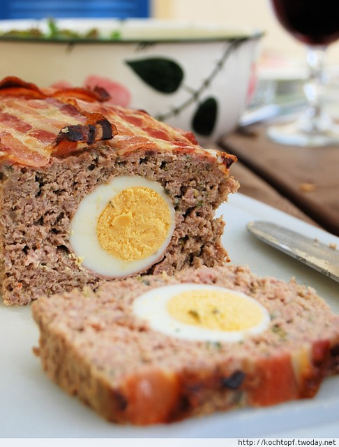

Fake Rabbit

Description
A traditional German Meatloaf recipe called "Falscher Hase" - Fake Rabbit.
Ingredients
- 600g ground meat (300g pork, 300g beef)
- 1 1/2 dinner rolls
- 1 onion, diced
- 2 eggs for the loaf
- 5 eggs for boiling
- 1 clove garlic
- 1 bunch parsley
- Dijon mustard (1tbsp)
- Pepper, Salt
- 14 slices bacon
Steps
- Soak dinner rolls in warm water
- Preheat oven to 170°C
-
In a pot, bring water to boil, cook 5 eggs for about 7 minutes and peel
them (after letting them cool down)
-
Put ground meat, 2 eggs, mustard, onion, salt and pepper in a large
bowl.
- Chop parsley, press garlic and add them to the bowl.
-
Squeeze water from soaked rolls and put them into the bowl as well.
- Mix everything to a smooth mass.
-
Place some parchment paper on a baking sheet and put the bacon slices
(overlapping) onto it in a large rectangle.
-
Place the mixture on top of the bacon, leaving a large rim underneath.
-
Make an indention in the center of the mixture and put the boiled eggs
in this indention.
-
Grab one side of the parchment and flip half the meat-mixture over the
eggs. Repeat from the other side. Shape and wrap the loaf with bacon.
- Bake for an hour